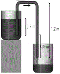
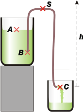

NO ME SALEN
(PROBLEMAS RESUELTOS DE BIOFÍSICA DEL CBC)
FLUIDOS
Fluidos ideales
|
|

|
| |
 |
|
30- Se llena una manguera con nafta y se cierra
por sus dos extremos. Se introduce un extremo
en un depósito de nafta a 0,3 m por debajo
de la superficie y el otro a 0,5 m por debajo del
primer extremo y se abren ambos extremos. El tubo tiene una sección
transversal interior de área 4 x 10-4 m². La densidad de la
nafta es 680 kg m-3 y su viscosidad
es despreciable. Ambos
recipientes están abiertos a la
atmósfera.
a) ¿Cuál es el caudal inicial
del flujo?
b) ¿Cuál sería el caudal
inicial si el tubo tuviera la mitad de radio?
c) ¿Cuánto vale la presión manométrica en el
arco superior de la manguera? |
|
|  |
|
El dispositivo se llama sifón, y es divertidísimo: es el sistema con el que se evacúan aquellos recipientes que no tienen agujero de desagote y que no se pueden volcar. Si uno sigue el procedimiento descripto en el enunciado, verá que por el extremo de afuera de la manguera sale el chorro que desagota al recipiente y continúa vaciándolo mientras se cumpla que ese extremo esté más bajo que el extremo en el interior. Sólo pensar que el líquido avanza por el tramo ascendente hace que parezca mágico. Pero es Bernoulli puro.
De todos modos el problemita este presenta dos o tres dificultades interesantes. |
|
|
a) ¿Cuál es el caudal inicial
del flujo? La primera es saber elegir los puntos de la corriente que vamos a comparar con la ecuación de Bernoulli. Está claro que el punto C debe aparecer, ya que nos piden hallar el caudal y para eso hace falta conocer la velocidad del chorro de salida por la manguera. Pero ¿con cuál lo comparo, con B (ese es el primer impulso) o con A?
La respuesta es que sólo comparando con A hallaremos la solución. Pero en principio no hay cómo saberlo: sólo la experiencia te lo irá enseñando. Si probamos la otra comparación el problema no sale y listo; no es grave, porque inmediatamente probamos el otro par... y ahí sí. |
 |
|
|
hS = 1,2 m
hA = 0,8 m
hB = 0,5 m
hC = 0 m |
prA + ρ g hA + ½ ρ vA² = prC + ρ g hC + ½ ρ vC²
Las presiones en ambos puntos son iguales: en ambas se trata de la presión atmosférica, porque el líquido está en contacto con el aire; de modo que se cancelan. Si tomamos el nivel cero en la posición del punto C, su energía potencial se anula. Y la altura de A es hA= 0,5 m, la suma de las dos diferencias de altura del enunciado. Miremos lo que queda:
ρ g hA + ½ ρ vA² = ½ ρ vC²
g hA + ½ vA² = ½ vC²
Acá aparece la segunda dificultad: no tenemos el valor de la velocidad del fluido en A, que no es otra cosa que la velocidad con que desciende el nivel de nafta del tanque. Por suerte hiciste este ejercicio, porque en varios otros vas a poder razonar de la misma manera: la velocidad en A es despreciable respecto de la velocidad en C, de modo que podés tirar todo ese término. Como ya sé que te parece un recurso mentiroso, después de hacer el problema te voy a demostrar por qué es correcto proceder así. Vamos de nuevo:
g hA= ½ vC²
ahora despejamos vC y calculamos
vC = ( 2 g hA )½
vC = ( 2 . 10 m/s2 . 0,8 m )½
vC = 4 m/s
Conocida la velocidad y la sección, el caudal es sencillo:
QC = SC . vC = 4 x 10-4 m² . 4 m/s
|
|
|
|
|
|
b) ¿Cuál sería el caudal
inicial si el tubo tuviera la mitad de radio? Si el tubo tiene la mitad del radio, entonces, su sección, S'C, es la cuarta parte que el tubo original.
Q'C = S'C . vC = 1 x 10-4 m² . 4 m/s |
|
|
|
|
|
c) ¿Cuánto vale la presión manométrica en el
arco superior de la manguera? Podemos comparar la altura del tubo con el punto A o el C. Voy con el A.
prA + ρ g hA + ½ ρ vA² = prS + ρ g hS + ½ ρ vS²
Al punto en el tubo superior lo llamé S. La velocidad en ese punto es la misma que en el estremo C. La presión en A podemos considerarla 0 y la velocidad ahí, obviamente, también.
prS = ρ g ( hA — hS ) — ½ ρ vS²
prS = — 680 kg m-310 m/s2 0,4 m — 340 kg m-316 m²/s²
|
|
|
|
|
|
Te voy a justificar que nuestro recurso de despreciar la velocidad en A respecto de la velocidad en C era válido. Supongamos que el depósito tenía 0,2 m² de sección (lo imagino lo más chico posible para no favorecer mi postura). En ese caso, por aplicación de la misma propiedad de continuidad, QC = QA = SA . vA, obtenemos
vA = 6,3 x 10-3 m/s
la resolución por Bernoulli habría quedado así:
vC = ( 2 g hA + vA² )½
Y eso da... ¡exactamente lo mismo que antes! Recién aparece una diferencia en la 5ta. cifra decimal. La razón es que cuando un número es mucho mayor que otro, al elevarlos al cuadrado (como nos pide Bernoulli) la diferencia es muchísimo mayor y eso justifica despreciar al más chico.
Todavía nos queda discutir la tercera dificultad, que consiste en lo siguiente: las preguntas del enunciado dicen velocidad inicial y caudal inicial. ¿Por qué dicen inicial? Los inexpertos suelen asociar la palabra inicial a la entrada de la corriente, y la palabra final a la salida. Pero eso no tiene nada que ver con nuestro problema. El asunto es que cuando la nafta empiece a salir la altura del nivel superior se va a modificar, y eso hace que la velocidad de salida se modifique también (disminuyendo).
Era por eso. |
|
|
|
|
|
Para saber más: |
|
 |
| |
|
| Algunos derechos reservados.
Se permite su reproducción citando la fuente. Se recomienda fervientemente su lectura en bibliotecas, escuelas, clubes y reuniones de consorcios. Última actualización mar-20. Buenos Aires, Argentina. |
|
|
| | |
|
|